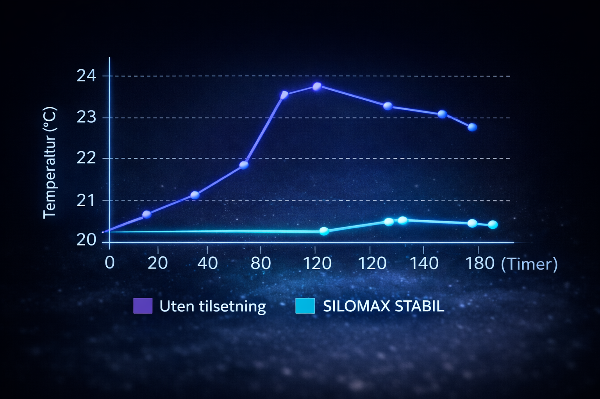
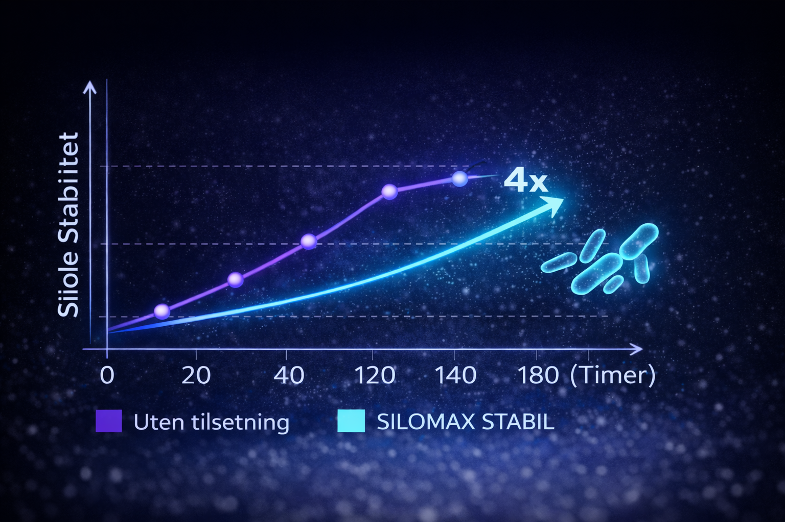

Silomax STABIL
- Optimalt gjæringsmønster
- Bedre fordøyelighet og mer energi
- Betydelig bedre stabilitet etter åpning av silo
- Fås i esker med 12 poser til 50 tonn
- Kan anvendes i økologisk produksjon
Betydelig mindre gjær og mugg – opptil 90 % reduksjon.

4 ganger lengre stabilitet etter åpning av siloen.
SILOMAX STABIL gir en mer stabil silo etter åpning.

Hemmer gjær og muggsopp og reduserer varmgang.
Bruksanvisning

Mål opp dose
Bland med vann


Rist i 30 sek
Tilsett i siloen